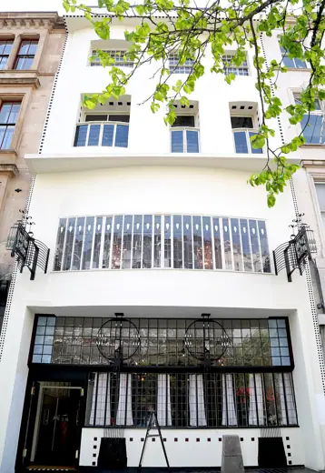
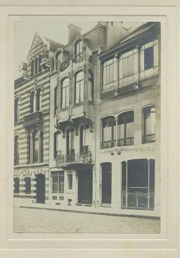
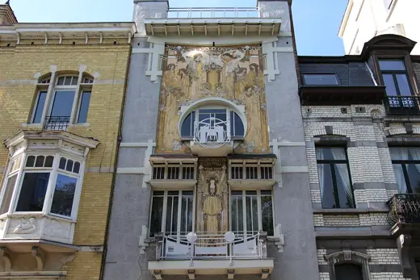
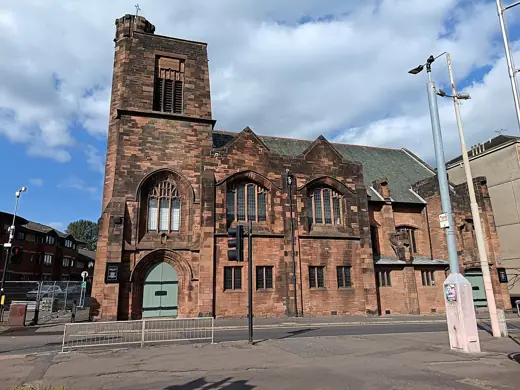

Buildings 98
Sort
 Sagrada Familiabegun 1882 · Barcelona
Sagrada Familiabegun 1882 · Barcelona
Willow Tearooms1903 · Glasgow
Horta House1901 · Brussels Hôtel van Eetvelde1898 · Brussels
Hôtel van Eetvelde1898 · Brussels Sagrada Família schools1909 · Barcelona
Sagrada Família schools1909 · Barcelona Austrian Postal Savings Bank1906 · Vienna
Austrian Postal Savings Bank1906 · Vienna CaixaForum Barcelona2002 · Barcelona
CaixaForum Barcelona2002 · Barcelona Karlsplatz Stadtbahn Pavilions1899 · Vienna
Karlsplatz Stadtbahn Pavilions1899 · Vienna The Lighthouse (Glasgow Herald Building)1895 · Glasgow
The Lighthouse (Glasgow Herald Building)1895 · Glasgow Casa Fuster1911 · Barcelona
Casa Fuster1911 · Barcelona Casa Serra1908 · Barcelona
Casa Serra1908 · Barcelona Sanatorium Purkersdorf1904 · Purkersdorf
Sanatorium Purkersdorf1904 · Purkersdorf Helsinki Central Station1919 · Helsinki
Helsinki Central Station1919 · Helsinki El Capricho1885 · Comillas
El Capricho1885 · Comillas Park Güell1914 · Barcelona
Park Güell1914 · Barcelona Hospital de Sant Pau1930 · Barcelona
Hospital de Sant Pau1930 · Barcelona Hôtel Tassel1894 · Brussels
Hôtel Tassel1894 · Brussels Casa Vicens1885 · Barcelona
Casa Vicens1885 · Barcelona
Cauchie House1905 · Brussels Villa Fallet1907 · La Chaux-de-Fonds
Villa Fallet1907 · La Chaux-de-Fonds Casa Calvet1900 · Barcelona
Casa Calvet1900 · Barcelona Bellesguard1909 · Barcelona
Bellesguard1909 · Barcelona Hôtel Guimard1912 · Paris
Hôtel Guimard1912 · Paris Museum of Applied Arts1896 · Budapest
Museum of Applied Arts1896 · Budapest Casa Batlló1906 · Barcelona
Casa Batlló1906 · Barcelona Stoclet Palace1911 · Brussels
Stoclet Palace1911 · Brussels Majolikahaus1899 · Vienna
Majolikahaus1899 · Vienna Palau de la Música Catalana1908 · Barcelona
Palau de la Música Catalana1908 · Barcelona Autrique House1893 · Brussels
Autrique House1893 · Brussels St. Paul's Church1919 · Tartu
St. Paul's Church1919 · Tartu Castel Béranger1898 · Paris
Castel Béranger1898 · Paris Staatstheater Cottbus1908 · Cottbus
Staatstheater Cottbus1908 · Cottbus Casa Lleó Morera1906 · Barcelona
Casa Lleó Morera1906 · Barcelona Crypt of Colonia Guell1915 · Santa Coloma de Cervello
Crypt of Colonia Guell1915 · Santa Coloma de Cervello Casa Milà1912 · Barcelona
Casa Milà1912 · Barcelona Glasgow School of Art1909 · Glasgow
Glasgow School of Art1909 · Glasgow Palau Güell1888 · Barcelona
Palau Güell1888 · Barcelona Kirche am Steinhof1907 · Vienna
Kirche am Steinhof1907 · Vienna House for an Art Lover1996 · Glasgow
House for an Art Lover1996 · Glasgow Municipal House (Obecní dům)1912 · Prague
Municipal House (Obecní dům)1912 · Prague Scotland Street School1906 · Glasgow
Scotland Street School1906 · Glasgow
Queen's Cross Church1899 · Glasgow Palacio de Bellas Artes1934 · Mexico City
Palacio de Bellas Artes1934 · Mexico City Villa Esche1903 · Chemnitz
Villa Esche1903 · Chemnitz House with Chimaeras1903 · Kyiv
House with Chimaeras1903 · Kyiv Güell Pavilions1887 · Barcelona
Güell Pavilions1887 · Barcelona